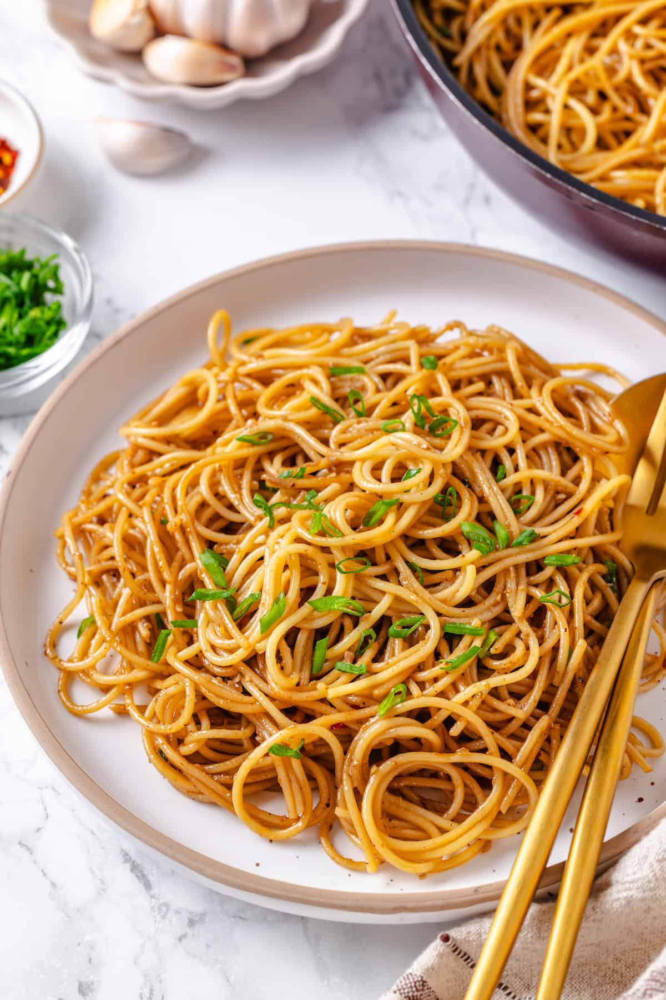

This is a high-bandwidth carbohydrate framework that trended harder on social media than a sketchy crypto scam. It proves that if you spam enough garlic cloves into a single pan, you can successfully overclock your tastebuds and alienate everyone within a five-mile radius. The algorithm demands you consume this buttery, high-latency dish immediately, completely ignoring the fact that your breath will require a total system reboot afterward. It is bloated, it is beautiful, and it has zero data privacy.